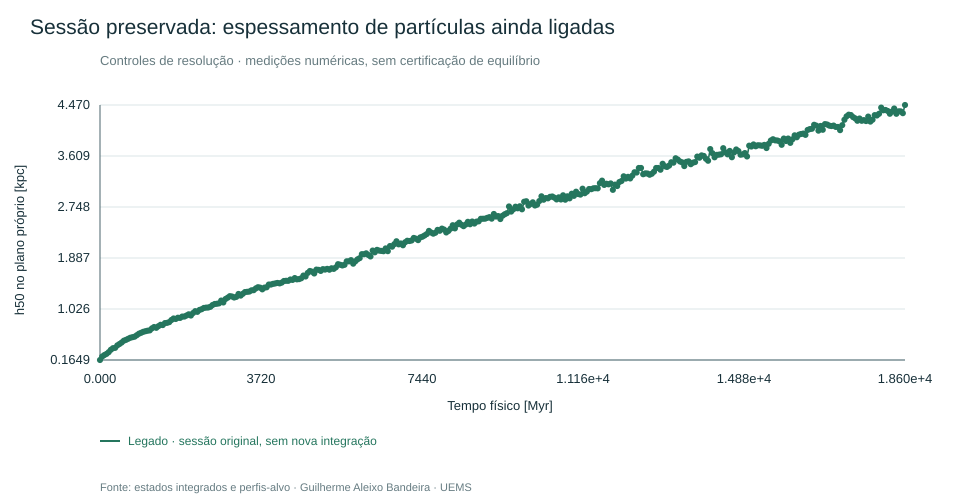

Guilherme Aleixo Bandeira · TCC UEMS · controles de até 200 Myr
O disco engrossa: o que os controles realmente demonstram?
O gráfico original é do legado. Equilíbrio e resolução mínima ainda não demonstrados.Realização 1ca8f265-4da8-49e8-9694-df20f8edc2fa. h50: 0.1648725 → 4.470348 kpc em 18.600 Myr. No snapshot final, nenhuma partícula do disco apresentou energia específica instantânea positiva. A maior variação energética direta amostrada foi 0.002062473%.
Foram executados 54 controles GPU e 16 controles CPU, preservando os geradores, massas e solver de produção. Refinar o halo reduziu o aquecimento. Refinar somente o disco não eliminou o espessamento. Campos fixos e componentes vivas continuam fisicamente distintos.

Marcadores: valores calculados ou médias explicitadas de três sementes. Segmentos: guias visuais. Os dados individuais e intervalos entre sementes estão nas tabelas. Nenhuma curva certifica equilíbrio.
Limitações: bojo principal com 512 partículas; refinamento do bojo apenas curto; candidato com suporte de halo incompatível na fronteira; três sementes da mesma biblioteca orbital; CPU/GPU com precisões distintas; energia avaliada em estados selecionados. Os controles não atribuem uma fração causal exclusiva a encontros ou modos coletivos. Nenhuma evolução nova ultrapassou 200 Myr.
Baixar relatório completo · Decisão e metadados · Séries CSV · Anéis CSV · Perfis radiais CSV · Custos medidos · Projeções de custo
Fontes: Sellwood 2013, Ludlow et al. 2021, Yurin & Springel 2014, GADGET-4. Os resultados acima foram calculados neste projeto; as referências fundamentam a interpretação e não certificam esta realização.